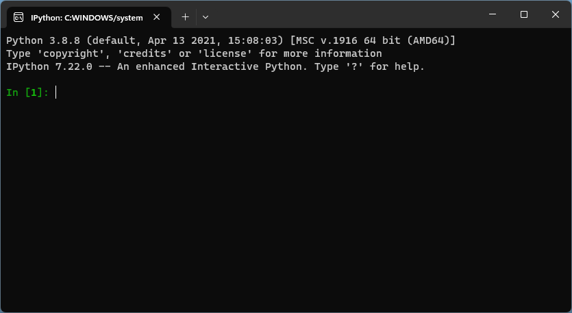

Введение
В этом разделе изложены вещи, которые нужно знать любому человеку, занимающемуся программированием.
В главе “Алгоритмы” рассказывается о самом важном понятии в программировании.
В главе “Как работают компьютеры” приведено до предела упрощённое описание внутреннего устройства компьютера и того, как выглядят программы “на самом деле”.
Из главы “Абстракции и виртуальные машины” читательница поймёт, что программисты — лентяи, и постоянно используют одни и те же приёмы, чтобы облегчать себе жизнь. Просто иногда называют их по-разному.
В главе “Языки программирования” рассказано о том, каким образом программы, написанные людьми по специальным правилам, превращаются в команды, которые компьютер может выполнить.
Алгоритмы
Алгоритм — чёткая инструкция для достижения какого-нибудь результата. Сложение и умножение чисел в столбик — алгоритм. Рецепт (если он хороший) — алгоритм приготовления блюда. А что такое хороший рецепт?
Хороший рецепт:
- Разогреть духовку до 210 градусов
- Выложить на решётку чевапчичи
- Поставить на полку противень (для сбора жира), а на него — решётку
- Запекать 25 минут
А плохой?
Жарить чевапчичи до готовности
Каждый шаг хорошего рецепта понятен и вполне однозначен, а единственный шаг плохого рецепта содержит лишь какие-то общие указания.
Кроме того, хороший рецепт подразумевает, что исполнитель однозначно понимает все шаги, из которых он состоит, и умеет их выполнять (так, как это представлял автор рецепта). Поэтому для человека, который умеет разогревать духовку, выкладывать продукты на решётку и засекать время, хороший рецепт вполне будет алгоритмом.
Обычно алгоритмы решают целое семейство сходных задач. Например, с помощью сложения в столбик можно сложить любые два числа, порядок действий от этого не изменится. Алгоритм “разложить в алфавитном порядке” одинаково пригоден и для сортировки специй, и для сортировки книг.
Часто бывает так, что какой-нибудь более сложный алгоритм включает в качестве шага какой-то более простой. На кухне такое, впрочем, встречается нечасто, а вот в математике — запросто. Например, чтобы перемножить два числа в столбик, в конце придётся сложить (обычно тоже в столбик) частичные произведения.
Бывает так, что некоторые шаги нужно повторять до достижения определённого результата. Например, как почистить мешок картошки:
- Если в мешке не осталось картошки, перейти к шагу 6
- Взять картошку из мешка
- Почистить её
- Положить её в миску-с-чищеной-картошкой
- Перейти к шагу 2
- Собрать очистки
Шаги 2-5 этого алгоритма будут повторяться до тех пор, пока вся картошка не будет почищена.
Такой алгоритм можно представить в виде блок-схемы (на ней хорошо видно это повторение):
flowchart TD
Bg((Начало)) --> A
A{Есть ли в мешке\n картошка?} -->|Да| B[Взять картошку из мешка]
B --> Cz[Почистить её]
Cz --> C[Положить в миску]
C --> A
A ----->|Нет| E[Собрать очистки]
E --> En((Конец))
Бывает даже так, что какой-то алгоритм включает в качестве шага самого себя — это называется рекурсией. Правда, с этим нужно быть аккуратным, потому что его исполнение может никогда не закончиться. Классический пример — вычисление N-ного числа Фибоначчи. Ряд Фибоначчи начинается с двух единиц, а далее каждое следующее число равно сумме двух предшествующих:
\[ 1, 1, 2, 3, 5, 8, 13, 21, 34, 56… \]
Как вычислить N-ное число Фибоначчи
- Если
N < 1— таких чисел нет. Ошибка.- Если
N = 1илиN = 2— ответ равен 1. Дальше делать ничего не надо- Вычислить N-1-ое число
- Далее вычислить N-2-ое число
- Сложить эти два числа, это и будет ответ
Во всех случаях алгоритмы подразумевают исполнителя, который должен понимать команды и уметь их правильно исполнять. При этом что по сути он собою представляет — не важно: рецепту может следовать и шеф, и поварёнок, и простая домохозяйка, а алгоритму вычисления чисел Фибоначчи может следовать и компьютер, и человек с калькулятором. Важно только, чтобы все одинаково понимали набор команд.
В следующем разделе рассмотрим, что же умеет типичный исполнитель-компьютер.
Как работает компьютер
Любая достаточно развитая технология неотличима от магии
(третий закон Артура Кларка)
Компьютеры умеют только одно: производить разные операции над нулями и единицами.
Но, во-первых, этих нулей и единиц много (порядка сотни миллиардов, если учитывать только оперативную память), а во-вторых, делают они это очень быстро (миллиарды операций в секунду). Поэтому нам кажется, что происходит какая-то магия. Эту магию мы можем увидеть, услышать или ощутить благодаря всяким дополнительным приспособлениям (устройствам ввода-вывода), с помощью которых вычислительная машина может взаимодействовать с внешним миром (и с нами).
Схематически компьютеры с момента самого их изобретения устроены следующим образом (эта схема называется архитектурой фон Неймана):
graph LR
subgraph C["Процессор"]
direction LR
M[Устройство\nуправления]
ALU[Арифметико-логическое устройство]
R[Регистры]:::alu
end
MEM
C <--> MEM[Оперативная память]
C <--> IO[Устройства\nввода-вывода]
classDef alu fill:#9ff;
Для чего нужны все эти части?
Процессор и его части
Арифметико-логическое устройство занимается арифметикой (складывает, вычитает, умножает, делит и т.п.) и логикой (сравнивает значения, выполняет дизъюнкцию, конъюнкцию и другие логические операции).
У процессора есть небольшое количество (порядка пары дюжин) регистров, в которых хранятся промежуточные результаты вычислений (и сравнений) и другие важные вещи, например, по какому адресу памяти нужно читать следующую команду.
Ключевая часть компьютера — устройство управления, которое командует почти всем остальным. Без него компьютер превратился бы в арифмометр, который работает только тогда, когда человек нажимает кнопки и крутит ручку. Устройство управления командует и само собой, читая из оперативной памяти команды и исполняя их.
Команды могут быть разными, например:
- Прочитать какое-нибудь значение из памяти и записать его в один из регистров
- Сложить числа из регистров
- Отправить какую-нибудь команду на одно из устройств вывода
- Перейти на какой-то другой адрес и начать читать команды оттуда
Собственно, последовательность таких команд и составляет программу. Сами команды, разумеется, тоже кодируются нулями и единицами.
Память
Оперативная память (часто просто “память”) состоит из множества ячеек, каждая из которых может хранить целое число от 0 до 255. У каждой ячейки есть свой номер — он называется адресом. В оперативной памяти хранится всё, что нужно для работы компьютера прямо сейчас.
Устройства ввода и вывода
Устройства ввода и вывода нужны для взаимодействия компьютера с внешним миром: без этого он не сможет делать ничего полезного. Устройства ввода, например, — это клавиатура и мышь, устройство вывода — монитор.
NB: жёсткий диск (SSD, флешка) — это не часть оперативной памяти, а одно из устройств ввода-вывода. Когда мы открываем какой-либо файл, то сначала процессор просит жёсткий диск скопировать данные с какого-то определённого места диска в память, а когда сохраняем — наоборот, записать данные обратно на диск.
Как выглядят программы
Программа может выглядеть, например, так:
- загрузи в регистр
Aчисло из памяти адресу 1 - загрузи в регистр
Bчисло из памяти по адресу 2 - сравни число из регистра
Aс числом из регистраB - если первое число меньше, перейди к шагу 7
- уменьши число в регистре
Ана число в регистреB(то есть вAбудетA - B) - перейди к шагу 3
- положи в память содержимое регистра
Aпо адресу 3
А вот как это выглядит в виде настоящей программы. Наверху есть кнопка Execute,
а внизу кода можно поменять начальные значения в ячейках num1 и num2.
Допустим, по адресу 1 расположено число 7, а по адресу 2 — число 3. Рассмотрим выполнение программы по шагам:
| Шаг | № ком. | Команда | № след. | A | B | Результат сравнения |
|---|---|---|---|---|---|---|
| 1 | 1 | Ячейка 1 → A | 2 | 7 | ||
| 2 | 2 | Ячейка 2 → B | 3 | 7 | 3 | |
| 3 | 3 | Сравнить A < B | 4 | 7 | 3 | |
| 4 | 4 | Если так, перейти к 7 | 5 | 7 | 3 | нет |
| 5 | 5 | A - B → A | 6 | 4 | 3 | нет |
| 6 | 6 | Перейти к 3 | 3 | 4 | 3 | нет |
| 7 | 3 | Сравнить A < B | 4 | 4 | 3 | нет |
| 8 | 4 | Если так, перейти к 7 | 5 | 4 | 3 | нет |
| 9 | 5 | A - B → A | 6 | 1 | 3 | нет |
| 10 | 6 | Перейти к 3 | 2 | 1 | 3 | нет |
| 11 | 3 | Сравнить A < B | 4 | 1 | 3 | да |
| 12 | 4 | Если так, перейти к 7 | 5 | 1 | 3 | да |
| 13 | 7 | A → Ячейка 3 | (конец) | 1 | 3 | да |
В этом случае программа вычислила остаток от деления числа 7 на число 3, вычитая из одного другое до тех пор, пока это возможно.
Контрольный вопрос
Что случится, если в ячейке
2будет записан ноль?
Абстракции и виртуальные машины
Писать программы в виде непосредственно команд для процессора весьма и весьма накладно, потому что кроме арифметики и логики нужно заниматься вводом и выводом, а как именно это делать — зависит буквально от всего, начиная от модели монитора и заканчивая тем, в какой именно порт воткнута клавиатура.
И здесь на помощь приходит идея абстрагирования. Поясним её на кулинарном примере. Когда в рецепте написано “вскипятить воду”, совершенно безразлично, каким именно способом это будет происходить. Один вскипятит воду в чайнике, другой в кастрюльке, третий в микроволновке, четвёртый на костре, пятый скомандует помощникам и т. п. Это некая абстракция, которая специфицирует результат, но не способ его достижения.
И именно такие абстракции очень нужны программистам. Например: “выведи строку” (неважно, на какой экран, может, вообще на принтере напечатать) или “прочитай файл по такому-то пути” (на диске, на флешке, по сети и т. п.), и нужен некий уровень абстракции (abstraction level), который возьмёт на себя все конкретные шаги по достижению какого-либо результата.
Для этого существует операционная система (ОС). Вместо того чтобы обращаться к видеокарте и монитору, программист просит ОС “напечатать на экране”, вместо обращения к жёсткому диску — “прочитай мне файл с таким-то именем”, и так далее. Такие обращения к ОС называются системными вызовами (system call). Кроме того, операционная система позволяет писать программу, не задумываясь о том, что вместе с ней одновременно могут работать какие-то другие программы, и множество всего прочего.
Но программисты редко работают напрямую с системными вызовами. Дело в том, что даже разные версии одной ОС могут иметь несколько различающиеся соглашения по этому поводу, а уж у разных ОС (например, Windows и Linux) системные вызовы совсем разные. Поэтому здесь нужен ещё один уровень абстракции, который обычно предоставляется средствами языка программирования, и он скрывает от программиста все тонкости взаимодействия с операционной системой.
Так, команда “напечатай строку на экране” в зависимости от ОС превращается в разные системные вызовы, а в зависимости от железа ОС делает разные вещи, но обо всём этом программисту обычно думать не нужно.
Но чтобы что-нибудь вычислить, операционная система не нужна, и в этом случае язык программирования помогает абстрагироваться от конкретных арифметических команд конкретного процессора.
Виртуальные машины
Идея абстрагирования имеет и другие интересные применения. Например, если очень хочется запустить какую-нибудь программу, написанную для отсутствующей аппаратной системы (например, Sega), то достаточно написать эмулятор, который будет исполнять команды точно так же, создав таким образом виртуальную машину (приставка — тоже машина).
Но кто сказал, что виртуальная машина должна обязательно соответствовать какой-то существующей системе? Можно ведь придумать свой удобный набор команд (“байт-код”), а затем реализовать его эмуляторы для всех нужных систем.
Именно так работает Java: программы на ней распространяются в виде кода для специальной виртуальной машины (Java Virtual Machine, JVM), а для каждой целевой системы существуют реализации JVM. Более того, есть несколько альтернативных реализаций JVM. А ещё на базе JVM можно писать программы не только на Java, но и на других языках.
Поскольку к этому моменту уже ничего не понятно, нарисуем слоёный пирог абстракций:
flowchart TD
subgraph Lang[Языки программирования]
Java
Groovy
Kotlin
end
Lang <-->|Байт-код| JVM
subgraph JVM[Виртуальные машины Java]
Or[Oracle JVM]
OpenJDK
end
JVM <-->|Системные вызовы| OS
subgraph OS[Операционные системы]
Windows
Linux
macOS
end
OS <-->|Машинный код| Proc
JVM <-->|Машинный код| Proc
subgraph Proc[Процессоры]
Intel
AMD
ARM[Apple Silicon]
end
Как это понимать?
Программу, написанную на любом из этих языков, может выполнить любая виртуальная машина Java. Она, в свою очередь, может работать на разных операционных системах, которые могут работать на разном оборудовании. И благодаря тому, что на каждом уровне правила строго определены, большую часть времени программисту вообще не нужно думать, как это работает на самом деле.
Глубже и выше
“Пирог” можно наращивать в обоих направлениях. Если речь идёт о программировании хоть сколько-нибудь сложной системы, то программисты сами наращивают абстракции. Например, брать деньги за какую-нибудь услугу можно разными способами, но с точки зрения процесса купли-продажи способ неважен, поэтому этот процесс прячется за абстракцией “платежа”.
Более изощрённый пример: существует, например, Jython — реализация языка Python, написанная на Java. А на Python написан эмулятор эзотерического языка программирования Befunge. Но это уже из области ненормального программирования.
С другой стороны, можно запускать программы не на реальной, а на виртуальной машине. Но всё обстоит даже интереснее: многие “реальные” современные процессоры содержат внутри специальную программу (микрокод), которая на самом деле исполняет “в железе” все команды.
Ну и в самом железе есть ещё пара уровней абстракции, которые скрывают от разработчиков логических схем процессора реальные физические явления. И всё это как-то работает!
Языки программирования
Сосредоточимся теперь на языках программирования. Они позволяют писать программы на более “человеческом” языке. Затем с помощью специальной программы то, что написано в “человечьем” виде превращается в команды для машины. Выглядит это так:
flowchart LR
s["Исходный код \n(на языке программирования)"]
t{Транслятор}
c["Команды для процессора \n(машинный код)"]
s --> t --> c
style t fill:#fe3
Исходный код — текст, написанный по специальным правилам языка программирования. Транслятор “переводит” его с языка программирования в последовательность команд для процессора (машинный код) или для виртуальной машины (байт-код).
Детали работы транслятора сейчас совершенно не важны. Важно, что делать это можно двумя разными способами: или один раз заранее, или каждый раз при запуске программы.
Виды трансляции
Компиляция
Компиляция — преобразование исходного кода в машинный заранее. Это происходит, как правило, на компьютере разработчика, и, таким образом, пользователь не имеет доступа к исходному коду программы (и без специальных навыков ему очень сложно что-то там подкрутить).
Интерпретация
Интерпретация — преобразование исходного кода в машинный прямо в процессе работы программы. Поэтому для работы программы каждый раз нужен интерпретатор. Из-за того, что трансляция происходит каждый раз во время работы программы, оно в целом работает медленнее, чем в случае компиляции. Зато программисту нужно гораздо меньше думать о том, на какой именно системе будет работать его программа.
Виртуальные машины размывают грань между интерпретацией и компиляций. Например, традиционно считается, что язык Java — компилируемый, а Python — интерпретируемый. На самом деле, оба они основаны на виртуальных машинах, вот только в случае Java виртуальная машина существует и распространяется отдельно от транслятора, а в случае Python они объединены.
Компилируемые языки обычно в целом более строгие и требовательные к программисту (потому что программу нужно скомпилировать “раз и навсегда”), а интерпретируемые отличаются большей гибкостью.
REPL
Интерпретируемые языки обычно содержат так называемый REPL — Read-Eval-Print Loop. Это специальная программа, которая читает (read) с клавиатуры какую-нибудь очередную команду языка программирования, сразу же исполняет (evaluate) её и выводит (print) результат. Потом процесс повторяется заново. Это очень удобно для того, чтобы разобраться в чём-нибудь, например, в процессе обучения.
В дистрибутиве Python есть специальный инструмент — IPython, который как раз реализует эту парадигму. Осталось его запустить и читать следующий раздел.
Забавы с REPL
В этом разделе читательница познакомится с некоторыми простыми “командами” языка Python, узнает о базовых типах данных и что-то ещё, что автор пока не придумал.
Но прежде всего нужно научиться запускать IPython.
Установка Python
pip
Это не персонаж “Больших надежд” Диккенса, а инструмент, позволяющий устанавливать разные пакеты для Python. Кто-то что-то хорошее написал, а другие могут воспользоваться.
Для обучения нам понадобятся пока два пакета: ipython и notebook. Установить их можно с помощью pip.
Как выглядит IPython
IPython (Interactive Python) — отличный инструмент для обучения, быстрой проверки чего-нибудь и т. п. При запуске он выглядит как-то так:

и приветливо ожидает ввода команд (надпись In [1]: называется prompt — приглашением).
Сверху написана всякая служебная информация, из которых главное — версия Python (на скриншоте — 3.8.8).
Здесь же следует сделать лирическое отступление и рассказать немного о чёрном (или белом) окошке с буквами, которое именуется эмулятором терминала или же просто терминалом.
Исторически терминал — это клавиатура-с-монитором (а ещё раньше — клавиатура-с-принтером). К большой ЭВМ, которая могла занимать целый машинный зал, были присоединены одно или несколько таких устройств, и несколько пользователей могли работать одновременно, не мешая друг другу. С точки зрения ЭВМ это устройство ввода-вывода, которое умеет вводить и выводить текст. Изначально они были монохромные (точнее, чёрно-зелёные и чёрно-оранжевые), а уже много позже обрели целых 16 цветов.
Эта концепция оказалась настолько живучей, что в любом современном компьютере есть эмулятор терминала, который обеспечивает возможность взаимодействовать с компьютером с помощью текста.
IPython ждёт, что пользователь введёт строку кода на Python, тогда выполнит её, выведет результат исполнения и будет ждать следующую строку.
Калькулятор на стероидах
Итак, перед нами IPython, и для начала можно что-нибудь посчитать, например, умножить пару больших чисел.
Для этого необходимо ввести что-то в духе 1111 * 2222 и нажать Enter. Тут же появится ответ.
Кроме умножения, числа можно складывать (19 + 23), вычитать (15 - 167), делить (10 / 2) и возводить в степень (2 ** 16).
Python умеет обрабатывать очень большие целые числа (например, 2 ** 1000 или даже 2 ** 122910 — в нём 37 тыс. десятичных знаков).
Скобки и приоритет операций работают так, как мы привыкли. Можно попробовать вычислить 2 + 2 * 2.
Если нажимать клавиши “вверх” и “вниз”, то можно воскрешать ранее введённые команды (и редактировать их). Это не уникальная особенность IPython, а старое и привычное удобство многих программ, взаимодействующих с пользователем в интерактивном текстовом режиме.
Выражения, литералы и операторы
То, что написано — это выражение. Выражение имеет какое-то значение, которое может быть вычислено (и вычисляется). В данном случае выражение состоит из литералов и операторов.
Литерал — это буквальное значение, выписанное в коде. 42, -1 и 2.71828182818 — это числовые литералы,
причём первые два — целые, а последний — нет (это важное различение).
Литералы бывают не только числовые, (например, строковые, логические, и пр.), но об этом позже.
+, -, ** — это операторы. Операторы бывают бинарные и унарные. Бинарный оператор — например, умножение (*).
Умножаем мы всегда что-нибудь одно на что-нибудь другое, например 50 * 6. 50 здесь называется левым операндом,
а 6 — правым.
+ и - могут быть как бинарными, так и унарными операторами. Если мы пишем 10 - 7, то минус здесь — бинарный и означает,
что из десяти нужно вычесть семь. Если же мы пишем -(1), то минус — унарный, и означает, что число здесь отрицательное.
Почему
-(1)с единицей в скобках? Потому что если мы напишем без скобок, то минус будет частью числового литерала. С плюсом аналогично.
Ошибки
Если написать выражение, не соответствующее правилам Python, например, 2 - или * 7, то интерпретатор будет
ругаться. Ошибка выглядит следующим образом:
File "<ipython-input-1-12edae092881>", line 1
2 -
^
SyntaxError: invalid syntax
Строку про файл мы можем игнорировать, потому что код исполняется в интерактивном окружении, а вот ниже информация полезная.
Сначала приведена строка кода, в которой содержится ошибка, на строку ниже стоит символ ^, который словно стрелка указывает на
место, где возникла ошибка, а ещё ниже указан тип ошибки (SyntaxError) и описание (неверный синтаксис).
Числовые типы данных
А теперь немного скучной (но важной) теории. Все значения, с которыми мы имеем дело в программировании, имеют определённый тип. Это необходимо для того, чтобы нули и единицы имели какое-то определённое значение.
Узнать, какого типа выражение можно, введя type(...), подставив вместо многоточия в скобках нужное выражение.
Это тоже будет выражение (вызов функции type), но пока что в это погружаться не будем.
Один из основных типов данных — целочисленный. Он обозначается int (от integer — целое число)
Все целые числа принадлежат этому типу:
In [1]: type(5)
Out[1]: int
In [2]: type(0)
Out[2]: int
В скобках можно написать не просто числовой литерал, а любое выражение:
In [3]: type(78 * -56)
Out[3]: int
Но деление приводит к другому типу:
In [4]: type(10 / 5)
Out[4]: float
Можно заметить, что результат деления 10 / 5 выводится не в виде 2, а в виде 2.0.
Это значения типа float — число с плавающей запятой (floating point).
Что такое плавающая запятая (или точка)
Целое число всегда можно представить точно, просто храня все его цифры. С не-целыми числами это может быть проблемой, например, чтобы хранить значение \( \pi \) (
3.1415926...), \( \sqrt{2} \) (1.414213562…), или даже \( 2\frac{2}{3} \) (2.6666666666666...), не хватит никакого конечного количества цифр.Поэтому здесь используется хитрый трюк: число представляется в виде так называемой “экспоненциальной записи” (scientific notation), которая применяется в обычной жизни для записи очень больших или очень маленьких чисел. Например, число Авогадро обычно записывается как \( 6.022 \cdot 10^{23} \), то есть сначала первые несколько значащих цифр, а затем множитель, определяющий порядок числа. Кстати, в обычной жизни мы тоже часто этим пользуемся, говоря “восемь с половиной миллионов” (то есть \( 8.5 \cdot 10^6\ \)) или “пять нанометров” (то есть \( 5 \cdot 10^{-9} \)).
Таким образом, и для очень больших чисел (как число Авогадро, или даже больше), и для очень маленьких (как гравитационная постоянная) получается хранить достаточное количество значащих цифр.
Их можно даже перемножить. Число Авогадро в синтаксисе Python (как и во многих других языках) можно записать как
6.022e23(букваeс последующими цифрами — часть числового литерала, означает “умножить на десять в степени…”), гравитационная постоянная —6.67430e-11. Произведение будет таково:In [5]: 6.022e23 * 6.67430e-11 Out[5]: 40192634600000.0С другой стороны, такое представление чисел приводит к некоторым неочевидным вещам (попробуйте сложить
0.1и0.2). А потом можно посетить специальный сайт, посвящённый этой тонкости.
Строго говоря, в Python есть ещё несколько числовых типов, но только int и float используются повсеместно.